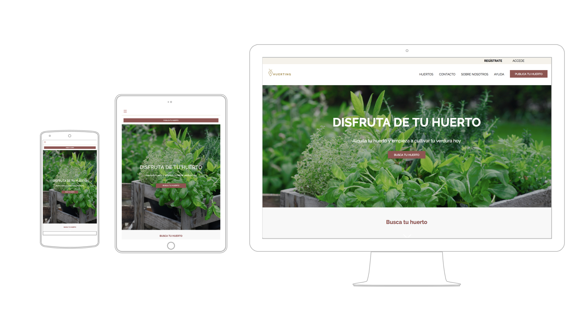
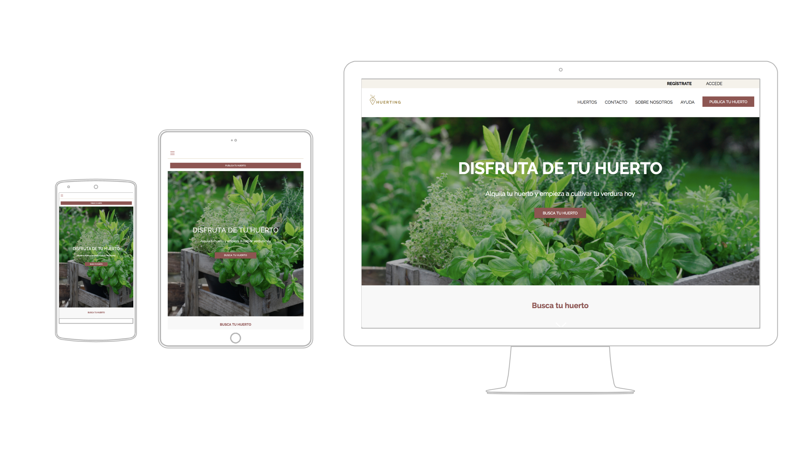

Trabajo final de máster en diseño web.Proyecto donde diseñabamos de forma colaborativa una web desde cero con metodologías útiles.
Huerting es una plataforma que plantea conectar agricultores que no utilizan sus tierras, con personas de la ciudad que están interesadas en cultivar su propio huerto, ya sea como pasatiempo,ejercitarse, o simplemente para comer sano. Se brinda un servicio de intermediario entre los 2 usuarios, poniendo como garantía que el alquiler y los servicios del huerto van incluidos.

 

Si quieres ver el proyecto funcionando pulsa sobre la siguiente imagen y se abrirá en tu navegador